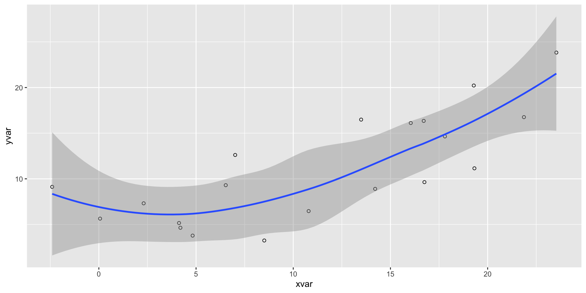
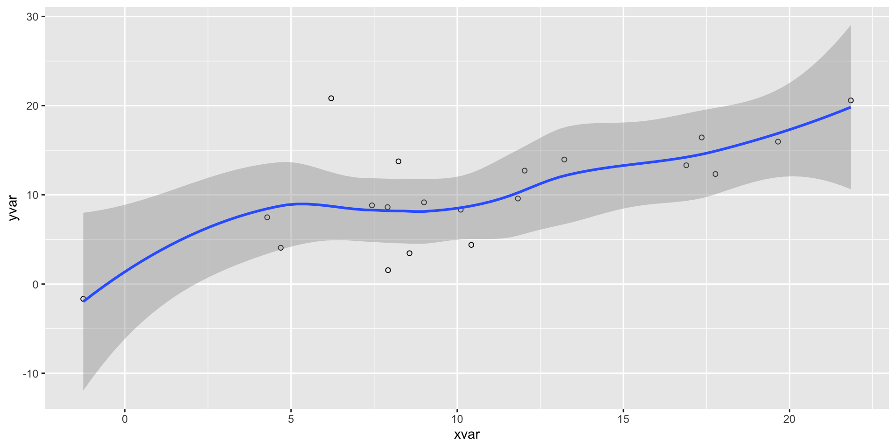

Lecture Template
Your Institute
Outline
Here you can link to certain slides for navigation1
The Basics
Imbedding Code:
Introduction
These slides are created using revealjs format in Quarto.
We’ve highlighted many of the useful and cool features, but you can explore even more on the Quarto website:
Font Styles
italics, bold, bold italics, strikethrough, monospaced
Bigger font
Smaller font
This text will appear red.
This is line green text.
Math
You can write mathematical equations using LaTex
- e.g.
$f(y) = x^2$renders to \(f(y) = x^2\)
You can center math on its own line using double dollar signs, e.g. $$f(y) = x^2$$ renders to:
\[f(y) = x^2\]
Tables
| Syntax | Appearance | Usage |
|---|---|---|
$...$ |
Inline | For short expressions in text |
$$...$$ |
Display | For emphasizing key equations |
Lists
Unordered
- fruit
- apples
- bananas
- vegetables
Ordered
one
two
- alpha
- beta
Tasks
Animated Bullets
You can create incremental lists using the incremental div.
Writing Code
To include runnable code in Quarto, use fenced code blocks with the appropriate language engine:
- Use three backticks followed by
{r}to start an R code block. - You can add Chunk Options after
#|, one per line.
Chunk Options
These control how code blocks behave:
echo: true/false– Show or hide the source code.eval: true/false– Evaluate the code or not.code-fold: true/false– Allow the code block to be collapsible.code-summary: "text"– Customize label for folded code.
Example: Code Folding
See the next slide for the rendered output …
Example: Code Folding

Example: Code Hiding
Setting echo: false hides the code and shows only the output.
```{r}
#| echo: false
library(ggplot2)
dat <- data.frame(cond = rep(c("A", "B"), each=10),
xvar = 1:20 + rnorm(20,sd=3),
yvar = 1:20 + rnorm(20,sd=3))
ggplot(dat, aes(x=xvar, y=yvar)) +
geom_point(shape=1) +
geom_smooth()
```See the next slide for the rendered output …
Example: Code Hiding

Code Copying
All code blocks include a clipboard icon by default. Hover and click to copy the code.
Output Location
By default, the output will follow immediately after the code. Use output-location to control where the output appears:
output-location |
Description |
|---|---|
fragment |
Output appears as a fragment—revealed when you advance the slide |
slide |
Output appears on the next slide, separate from the code |
column |
Code and output shown side‑by‑side in two equal-width columns on one slide |
column-fragment |
Same as column, but output is delayed as a fragment |
Adjusting Slide Size
The table didn’t quite fit on the previous slide, so we use the .smaller CSS class to reduce the font size for the entire slide. Here’s what’s happening under the hood:
Example: Default (output after code)

Example: Output on next slide
Example: Output on next slide

Example: Column

Example: Resize figure
Interactive Code
Static Image
The basic syntax for including an image is:
Which renders to: (jump here for more image options)
Image Caption (Optional). Read more about figures and subfigures here: Quarto: figures
Presenter Notes
You can create presenter notes using div with the notes class
Read this in Speaker View by pressing the SS key (give it a try!)
Warning
If you are publishing your HTML slides, your students can also gain access to the presenter notes by pressing S.
Scrollable Slides
The .scrollable class makes overflow content scrollable vertically rather than being cut off.
You can acheive it using:
This is especially useful when you have:
- Long code blocks
- Large tables
- Verbose output
- Lists or explanations that extend beyond the slide height
Example without using scrollable
Below is a long list of repeated text to demonstrate how text will get cut off without using scrollable 😞
- Line 1: You can’t scroll down to see more
- Line 2: You can’t scroll down to see more
- Line 3: You can’t scroll down to see more
- Line 4: You can’t scroll down to see more
- Line 5: You can’t scroll down to see more
- Line 6: You can’t scroll down to see more
- Line 7: You can’t scroll down to see more
- Line 8: You can’t scroll down to see more
- Line 9: You can’t scroll down to see more
- Line 10: You can’t scroll down to see more
- Line 11: You can’t scroll down to see more
- Line 12: You can’t scroll down to see more
- Line 13: You can’t scroll down to see more
- Line 14: You can’t scroll down to see more
- Line 15: You can’t scroll down to see more
- Line 16: You can’t scroll down to see more
- Line 17: You can’t scroll down to see more
- Line 18: You can’t scroll down to see more
- Line 19: You can’t scroll down to see more
- Line 20: You can’t scroll down to see more
Example using scrollable
Below is a long list of repeated text to demonstrate scrolling in action 🥳
- Line 1: Scroll down to see more
- Line 2: Scroll down to see more
- Line 3: Scroll down to see more
- Line 4: Scroll down to see more
- Line 5: Scroll down to see more
- Line 6: Scroll down to see more
- Line 7: Scroll down to see more
- Line 8: Scroll down to see more
- Line 9: Scroll down to see more
- Line 10: Scroll down to see more
- Line 11: Scroll down to see more
- Line 12: Scroll down to see more
- Line 13: Scroll down to see more
- Line 14: Scroll down to see more
- Line 15: Scroll down to see more
- Line 16: Scroll down to see more
- Line 17: Scroll down to see more
- Line 18: Scroll down to see more
- Line 19: Scroll down to see more
- Line 20: Scroll down to see more
Example: Scrollable Figure
Tip
.scrollable is useful when you have interactive code where students are expected to achieve a specific output that may otherwise be cut off due to limited slide space.
Q1. Change the points from circles to triangles (after running you will need to scroll down to see the resulting plot)
Smaller Slides
The .smaller class—used in the same way as .scrollable— reduces the base font size for the entire slide, excluding the slide title.
## Normal Slide
This is normal size text.
## Smaller Slide {.smaller}
This text will be smaller so more fits on the slide.An example of this can be seen on this slide.
Cross-referencing slides
Given the following slide title, Quarto will automatically generate the ID: of
my-amazing-slide.1To reference that slide we can use
[this slide](#my-amazing-slide), e.g. this slide[My Amazing Slide!], e.g. Output Location
Custom Titles
If you want to make a custom-id, use:
and reference using:
Callouts
Tip
There are five types of callouts, including: note, warning, important, tip, and caution; see Callout Blocks
Tip with Title
This is an example of a callout with a (non-default) title and the lightbulb icon disabled.
Note
If you do not specify a title it will default to the name of the callout type.
A “simple” appearance warning callout (retains icon)
A “minimal” appearance important callout (supresses icon)
Advanced Features
Whats Ahead
The above should be more than you need to get started creating presentations in your course. If you’re building more customized or interactive slides, we cover:
- Fragments & animations
- Slide state events
- Custom keyboard bindings
- Code execution and plugins
- Embedding other HTML/JS content
Code highlighting
In addition to the HTML Code Block options, revealjs supports the ability to do line highlighting. This is accomplished using:
Code Annotation
Much like footnotes, we could use Code Annotations to attach explanation to lines of code.
Code Animations
You can also animate between code blocks to show changes in code. For example:
Code Animations II
You can also animate between code blocks to show changes in code. For example:
# Define a server for the Shiny app
function(input, output) {
# Fill in the spot we created for a plot
output$phonePlot <- renderPlot({
# Render a barplot
barplot(WorldPhones[,input$region]*1000,
main=input$region,
ylab="Number of Telephones",
xlab="Year")
})
}Learn more: Code Animations
Visual Editor
The Visual Editor (VE) (as opposed to the Source Editor) in RStudio is a WYSIWYM editor interface.
It includes a toolbar with buttons and menu options for:
formatting text (bold, italics, headers, lists)
inserting tables, images
hyperlinks,
and more!
Bonus: It also provides previews of rendered math, plots, and supports the execution of code cells.
Figures/Images using VE
Quarto supports a number of ways to include figures and subfigures into your documents; see Quarto:Figures.

This is how you can included an image in yours slides using the Visual Editor in RStudio
Figure Options

The VE will open up a pop-up window where you can choose the alignment of your image (default, left, center, right), add captions, and include alternative text.
Right-aligned Image
For demonstration we make our image left-aligned.
In the Source Editor, the markdown syntax is:
Resizing in Markdown (Source Editor)
You can resize images using the {} attribute list syntax directly after the image. e.g.
You can also use other units:
You can combine it with alignment:
Resizing in Visual Editor
In VE you can resize an image by clicking and dragging its corner handles.
By default, the aspect ratio is locked. You can disable this and adjust dimensions independently.
See the next slide for a demonstration
 .
.
Videos
You can embed videos in documents using {{< video >}} the shortcode; see Quarto: videos
iFrame
You can also embed videos/webpages using an iFrame
Note
Some websites block iframe, so previews may not appear in the rendered Quarto output for those sites.